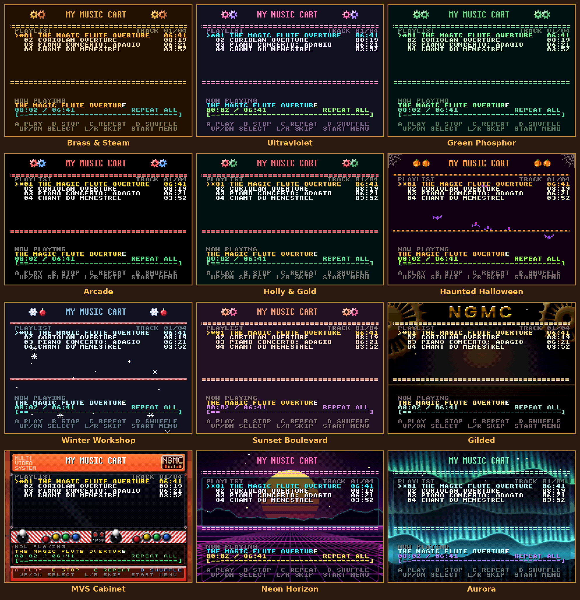
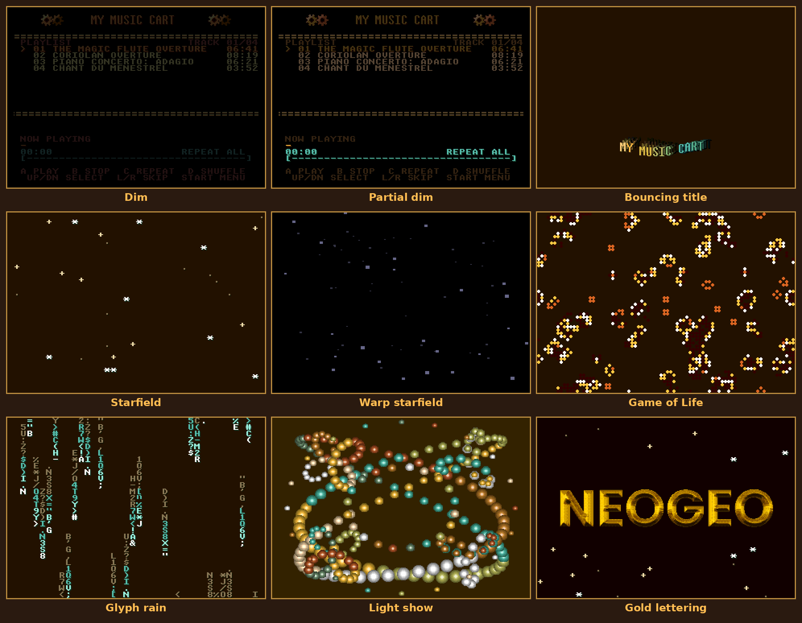

Neo Geo Media Centre
Your own music on a real Neo Geo. A homebrew music-player cartridge for the SNK Neo Geo, and the Foundry: a web page where you drop in your music, pick a look and build a cartridge image for a NeoSD flash cart or the MAME emulator. Nothing to install, and nothing is uploaded.
How it works
- Open the Foundry and drop in your music.
- Name and order the tracks, pick a skin and a screensaver.
- Build a
.neofile (NeoSD) or a MAME set, and play.
Twelve skins

Screensavers

Credits
By bLiGhTy. Free software under the LGPL v3 or later. Built with ngdevkit by Damien Ciabrini. The ngdevkit logo uses the font Reckoner by Alex Dale (1001fonts Free For Commercial Use licence); screen text uses Unscii by Viznut (public domain). Fonts: IM Fell English SC and Libre Baskerville (SIL Open Font License), Special Elite (Apache License 2.0). Neo Geo is a trademark of its owners; this project is not affiliated with SNK.
Support the project
It is free and made in spare time. If you would like to chip in: